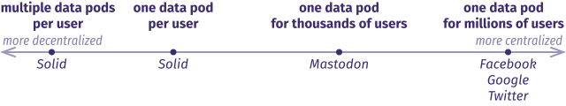
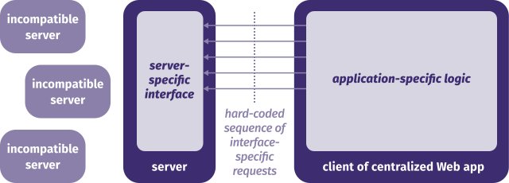
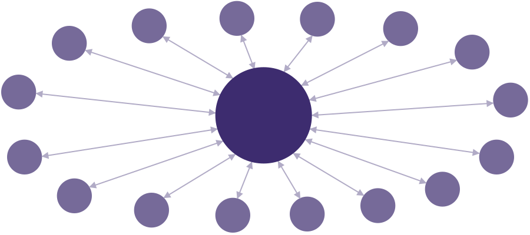
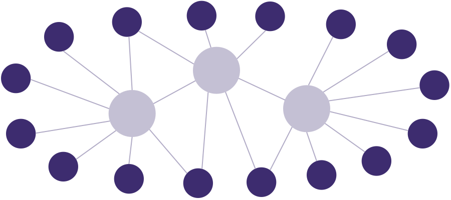
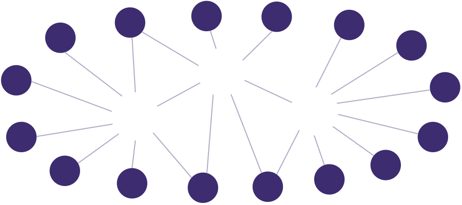

The delicate dance of
decentralization and aggregation
Ruben Verborgh
Ghent University – imec
Decentralization can be realized
at very different scales.

Every piece of data in decentralized apps
can come from a different place.

Solid is an application platform for
decentralization through Linked Data.
The creator represents each data item
as Linked Data.
PREFIX as: <https://www.w3.org/ns/activitystreams#>
PREFIX xsd: <http://www.w3.org/2001/XMLSchema#>
<#elag2018> a as:Like;
as:actor <https://ruben.verborgh.org/profile/#me>;
as:object <https://www.elag2018.org/#conference>;
as:published "2018-06-05T07:00:00Z"^^xsd:dateTime.
Others can learn about my data
through Linked Data Notifications.
PREFIX as: <https://www.w3.org/ns/activitystreams#>
PREFIX xsd: <http://www.w3.org/2001/XMLSchema#>
_:announce a as:Announce;
as:actor <https://ruben.verborgh.org/profile/#me>;
as:object <https://drive.verborgh.org/likes/#elag2018>;
as:target <https://www.elag2018.org/#conference>;
as:updated "2018-06-05T07:00:00Z"^^xsd:dateTime.
A Linked Data Notification is
posted to your inbox.
POST /inbox/ HTTP/1.1
Host: www.elag2018.org
Content-Type: text/turtle
HTTP/1.1 201 Created
Location: https://www.elag2018.org/inbox/3679efc35
If I place a comment,
you can choose to link back.
-
you will know about my comment
- if you advertise a notification inbox
- if I choose to notify you
-
you can see my comment
- if I give you access permissions
-
you can link back to my comment
- if you want to
- so others can discover it
Multiple decentralized Web apps
share access to data stores.
When visiting an application,
you log in with an external identity.
-
I go to https://example.org/app
-
I log in with https://ruben.verborgh.org/profile/#me
-
The app requests data on my behalf
- from ruben.verborgh.org
- from my friend’s data pods
Different app and storage providers
compete independently.

Hard-coded client–server contracts are
unsustainable with multiple sources.

Query-based contracts can make
decentralized Web apps more sustainable.

I have been publishing my own metadata
since before most of these existed.
-
The only correct publication record
is the one that I publish myself.
-
I am the source of truth
of my publication metadata.
-
I have one page of all my publications
and one page for each publication.
- All are semantically marked up.
-
I publish all of this as Linked Data.
Why spend time on this while
the aggregators already do?
-
They’re doing it wrong.
- incomplete
- incorrect
- inconsistent
-
I don’t have time to correct all of them
and keep them in sync.
- They will mess it up anyways.
I want to be the source of truth.
I don’t need to be the only source.
-
I have this recurring dream in which
all of these platforms just harvest my data.
-
They can have it for free—it’s CC0.
-
I almost wish I could pay
to give them the correct data.
-
I’d need to set up one-off integrations (if allowed)
and they would break every month.
My personal website contains metadata
about my research and publications.
This includes metadata for:
My data is published following
the Linked Data principles.
-
1 FOAF profile in Turtle
- partly manual, mostly autogenerated
- >6,000 RDF triples about myself, people, publications
-
260 HTML+RDFa pages
- autogenerated using 5 template pages
- >13,000 RDF triples about publications, blog posts, articles
- (±50 triples per page)
My data is modeled using several
ontologies and vocabularies.
- Friend of a Friend (FOAF)
- Schema.org
- Bibliographic Ontology (BIBO)
- Citation Typing Ontology (CiTO)
- DBpedia
I publish my own Linked Data because
we need to practice what we preach.
-
How can we convince people
they should publish 5-star Linked Data
if we continue making up excuses
for not doing it ourselves?
-
My data is a home-cooking version
of Semantic Web Dog Food.
I publish my own Linked Data because
others already publish it—wrongly.
I struggle to keep up with incompleteness,
inaccuracies, duplicates, and wrong entries.
But who am I generating this data for?
-
Clearly, existing research networks don’t read it.
- …with the exception of Google Scholar.
-
Schema.org-compatible search engines
are probably very happy with it.
- They crawl and see the whole dataset.
-
We can’t build useful live applications on top of it.
- Linked Data clients only see small parts of the data.
The value of my Linked Data
needs to be unlocked.
I want to:
- help people consume my data
- lower the barrier for data reusers
-
enable powerful cross-dataset queries
Traversal-based Linked Data querying
cannot answer all questions adequately.
-
Completeness cannot be guaranteed.
- Web linking is unidirectional.
-
The semantic constructs in the query
are seldom identical to those of the data.
-
foaf:Person,
schema:Person,
or
wikidata:Q5?
-
rdfs:label,
dc:title,
foaf:name,
or
schema:name?
Solving querying fully at the server side
is too expensive for personal data.
- Hosting a SPARQL endpoint is expensive.
- A SPARQL endpoint with reasoning even more.
-
Marking up all data in two directions
and with multiple ontologies is unfeasible.
- difficult to maintain
- hard to express in RDFa Lite
I designed a simple ETL pipeline
to enrich and publish my website’s data.
This process runs every night:
- Extract RDF triples from
Turtle and HTML+RDFa documents.
- Reason over this data and its ontologies.
- Publish the result in a queryable interface.
Reasoning on the data and its ontologies
makes hidden semantics explicit.
- Skolemize ontologies to remove blank nodes.
- Compute deductive closure of ontologies.
- Compute deductive closure of ontologies and data.
- Subtract 2 from 3 to obtain only the enriched data.
- Remove leftover skolemized IRIs.
Reasoning expresses the same data
in different ways for different clients.
| | time (s) | # triples |
|---|
| extraction | 170 | 17,000 |
|---|
| skolemization ontologies | 1 | 44,000 |
|---|
| closure ontologies | 39 | 145,000 |
|---|
| closure ontologies & data | 62 | 183,000 |
|---|
| subtraction | 1 | 39,000 |
|---|
| removal | 1 | 36,000 |
|---|
| total | 273 | 36,000 |
|---|
Reasoning fills ontological gaps
before querying happens.
| | # pre | # post |
|---|
dc:title | 657 | 714 |
|---|
rdfs:label | 473 | 714 |
|---|
foaf:name | 394 | 714 |
|---|
schema:name | 439 | 714 |
|---|
schema:isPartOf | 263 | 263 |
|---|
schema:hasPart | 0 | 263 |
|---|
cito:cites | 0 | 33 |
|---|
cito:citesAsAuthority | 14 | 14 |
|---|
The resulting data is published
in a Triple Pattern Fragments interface.
-
A TPF server lets clients access RDF data
only by single triple patterns.
-
Full SPARQL queries are executed by clients.
-
TPF extends the Linked Data principles.
- Also offer predicate- and object-based lookup.
- Provide “dereferencing” of a URL on a different domain.
-
TPF interfaces are cheap.
- My server costs less than $5/month.
TPF query clients find all results
and find them faster.
| # results | time (s) |
|---|
| | LD | TPF | LD | TPF |
|---|
| people I know | 0 | 196 | 5.6 | 2.1 |
|---|
| publications I wrote | 0 | 205 | 10.8 | 4.0 |
|---|
| my publications | 134 | 205 | 12.6 | 4.1 |
|---|
| works I cite | 0 | 33 | 4.0 | 0.5 |
|---|
| my interests (federated) |
0 | 4 | 4.0 | 0.4 |
|---|
Open questions about
modeling Linked Data:
-
What ontologies should we use?
- …on webpages?
- …in a FOAF profile?
-
Should we describe the same concepts
using multiple ontologies?
-
Should we use generic properties and classes
or specific subproperties and subclasses?
The Paradox of Freedom:
you can only be free if you follow rules.
-
Decentralization means making our own choices.
-
Unless we agree on some basic things,
no one will see the result of our choices.
-
Agreement can be layered:
- 100% agrees on a small set (labeling, authorship, …)
- 80% agrees on a larger set (places, dimensions)
- 5% agrees on many smaller sets (sizes, colors, …)
We need to identify those rules
we all need to agree on.
- vocabularies
- data shapes
- interfaces
Lessons learned from aggregating hundreds of datasets
are highly useful to inform the discussion.
Decentralization needs replication
for realistic performance.

In addition to technological changes,
we need a shift of mindset.
-
from the one
to one of many
-
from source
to station
-
from platform
to service
Current networks are centered
around the aggregator.
We need to create network flows
to and from the aggregator.

The individual network nodes
need to become the source of truth.

Aggregators need to become part
of a larger network.

Aggregators serve as a crucial
but transparent layer in the network.

Aggregators’ main responsibility becomes
fostering a network between nodes.